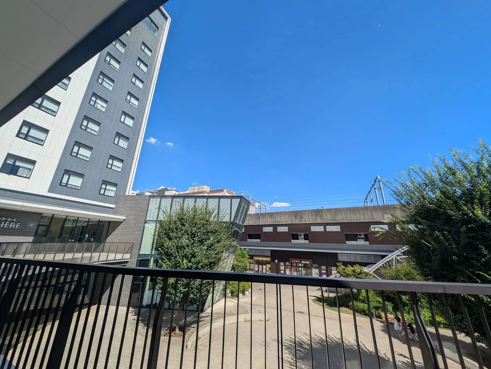
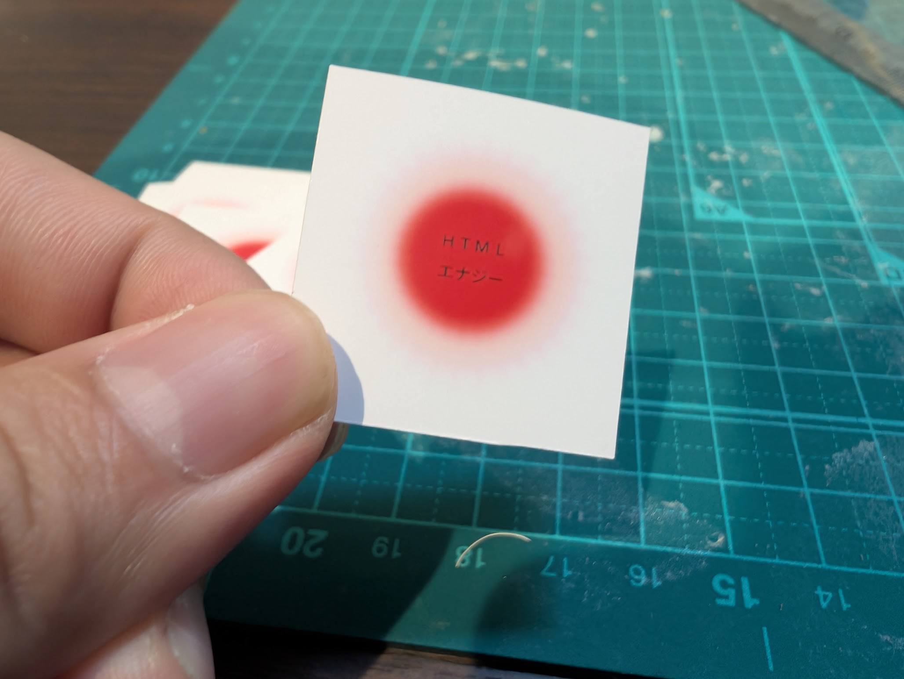

アーカイブ - HTML Day 2026 in 東葛

当日の成果物
HTML Day 2026 in 東葛に参加された皆さんの成果物一覧になります。みんなのHTMLエナジーを感じてみてください。
| 名前 | 作ったHTML(URL) | 説明 | 自己紹介やコメント |
|---|---|---|---|
| やまのく | https://htmlday2026.toukatsu.dev/ https://yamanoku.neocities.org/ |
・HTML Day 2026 in 東葛のサイト ・犬の紹介ページ |
主催者です。一児の父・会社員です。 https://yamanoku.net/ |
| Gyl | https://gyl.neocities.org/ | ・昭和のアナログゲームみたいなやつ | 情シスやってます。 |
| kouno | https://h-kono-it.github.io/html_day_2026/flick.html | select-selectedcontentを使ってフリック入力的なUIを実現したデモ 実DOMでレンダリングされるのでoptionsでいろんなhooksが使える疑惑 |
千葉北西部の地域コミュニティの主催者です。 https://kouno-log.hkono.workers.dev/ |
| mae616 | https://mae616.neocities.org/ | 今日起きた時「観覧車を作ろう」と思ったので「HTMLエナジー」を目指して頑張りましたが途中です | Webエンジニアもどき。ふらふらテキトー。夏はゴーヤチャンプルー |
| sakku | https://yusaku01.github.io/dialog-opner/ | ダイアログがネストできるそうなので、検証がてら試してみました。 | からし高菜が大好きです。 |
| higean | https://higean.neocities.org/ | 2000年頃の懐かしいタグや文字装飾、BBS、アクセスカウンターを使ってみる | デザイナーです。かなりひさしぶりにタグを打ちました。趣味は畑で野菜作りです。ひげあんです |
| かせい🐙 | https://kaseitako.github.io/htmlday2026/ | 今日のHTML Day 2026 in 東葛の説明と、自分のプロフィール | ふつうのホムペです 🥹 article タグ知らなかったので使ってみたぐらいです |


